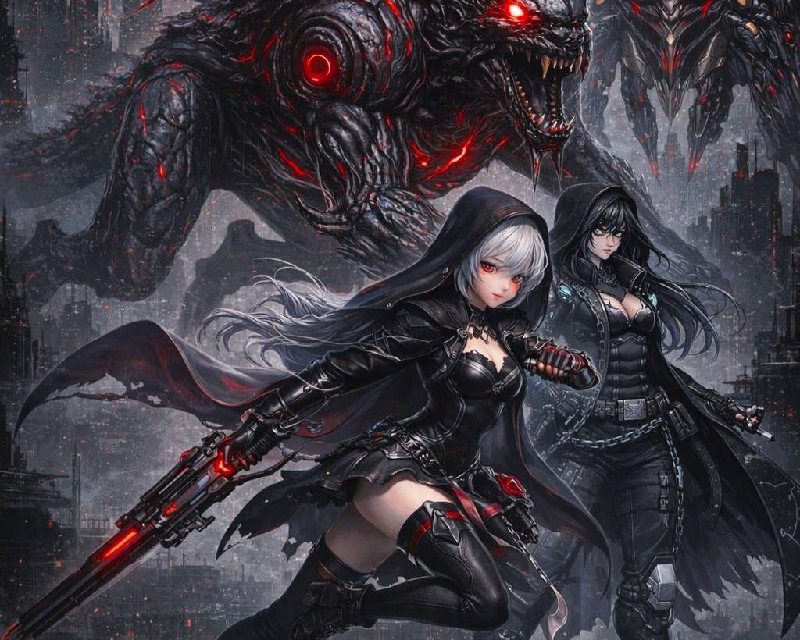

Capturas del Proyecto



Un intenso shooter vertical diseñado y estructurado desde cero en un reto de 24 horas. Mi rol se centró en el Game Design, definiendo el "core loop", el balance, las mecanicas y la experiencia del usuario (UI/UX), mientras que jabali.ai se encargó de toda la lógica de programación.
Ver en Itch.io